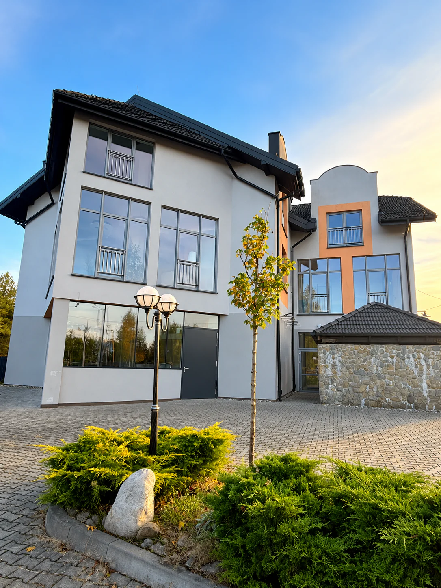
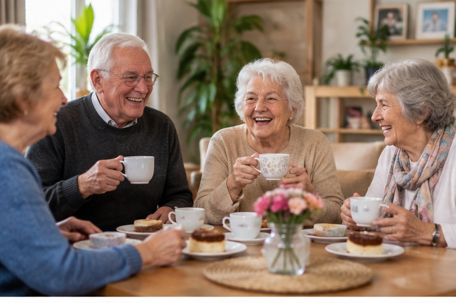
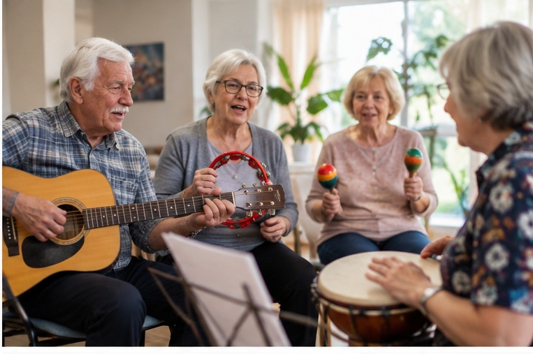

Dobre życie nie ma wieku
Martwisz się, że mama lub tata spędzają całe dnie sami w domu?
Miejsce, w którym nikt nie jest sam
„Pomarańczę” tworzymy z myślą o Seniorach, którzy chcą żyć aktywnie, po swojemu i wśród życzliwych ludzi – oraz o ich rodzinach, którym zależy, by bliska osoba była bezpieczna i zadbana. Dlatego w jednym miejscu w Sterkowcu łączymy trzy formy wsparcia, z których można korzystać osobno lub razem.
W Dziennym Domu Seniora dzień mija na rozmowach, zajęciach i wspólnym posiłku, a po południu wraca się do siebie. Mieszkania dla seniorów dają własną przestrzeń bez barier i ludzi obok, kiedy ma się ochotę na towarzystwo. Rehabilitacja pomaga zachować sprawność – w ramach pobytu w Dziennym Domu lub jako osobna usługa.
Dzienny Dom Seniora
Opieka, ciepły posiłek i zajęcia od poniedziałku do piątku — w gronie życzliwych ludzi.
Poznaj Dzienny Dom →Mieszkania dla seniorów
Własna przestrzeń bez barier, a obok wspólne miejsca i towarzystwo, kiedy masz na nie ochotę.
Zobacz mieszkania →Rehabilitacja
Fizjoterapia w ramach pobytu w Dziennym Domu Seniora lub jako osobna usługa.
Dowiedz się więcej →Wsparcie dla Seniora i spokój dla rodziny
Dla Seniora
- Bezpieczny i przewidywalny dzień w gronie znajomych osób
- Aktywność, terapia i rozwój — na tyle, na ile jest ochota
- Towarzystwo i rozmowa, które przeciwdziałają samotności
- Poczucie, że wciąż jest się ważną częścią społeczności
Dla Rodziny
- Spokój i pewność, że bliska osoba jest w dobrych rękach
- Czas na pracę, odpoczynek i własne obowiązki
- Stały kontakt i informacja o tym, jak minął dzień
- Wsparcie w codziennych, często niełatwych decyzjach
Zapraszamy do Pomarańczy w Sterkowcu
Centrum Seniora Pomarańcza mieści się przy ul. Sosnowej 83 w Sterkowcu. Jasne wnętrza, duże okna i spokojna okolica sprzyjają odpoczynkowi, zajęciom i spotkaniom.
Jesteśmy otwarci od poniedziałku do piątku w godzinach 8:00–16:00.
Jak do nas trafić



Fundacja Inicjatyw Społecznych „Pomarańcza”
Fundacja powstała z potrzeby tworzenia rzeczy ważnych i bliskich ludziom. Jednym z najważniejszych kierunków naszych działań jest wspieranie Seniorów – ich samodzielności, aktywności i relacji z innymi.
Chcemy znać naszych uczestników po imieniu, słuchać ich pomysłów i tworzyć program razem z nimi. Senior nie jest u nas biernym odbiorcą zajęć – jest częścią społeczności.
Poznaj Fundację